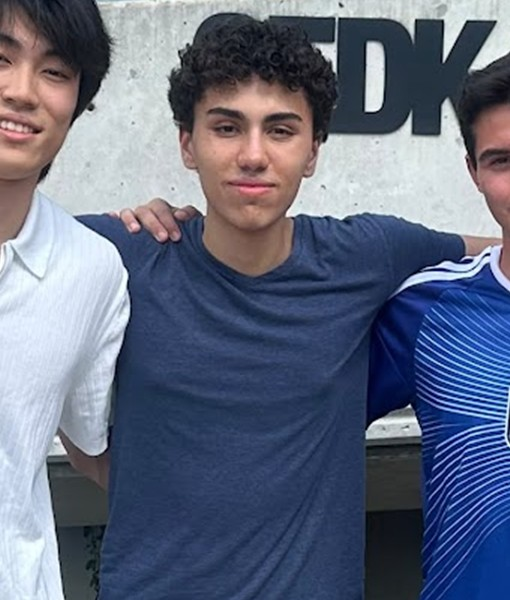
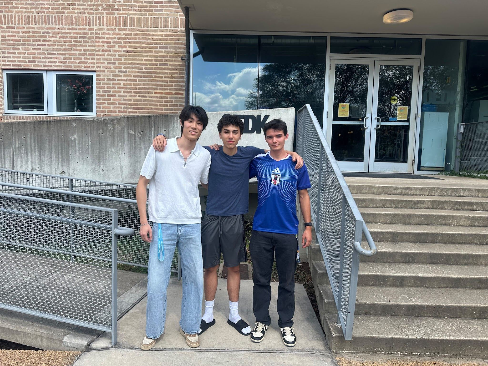
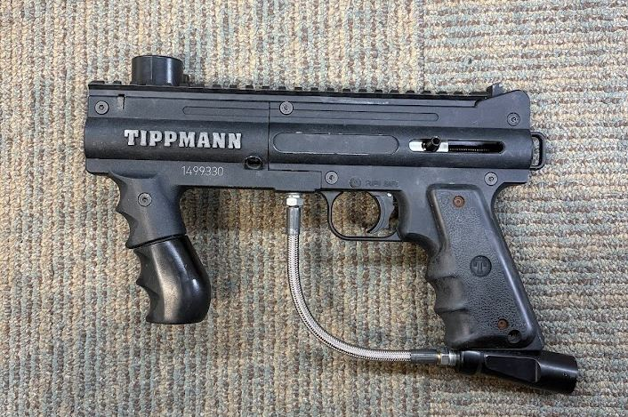
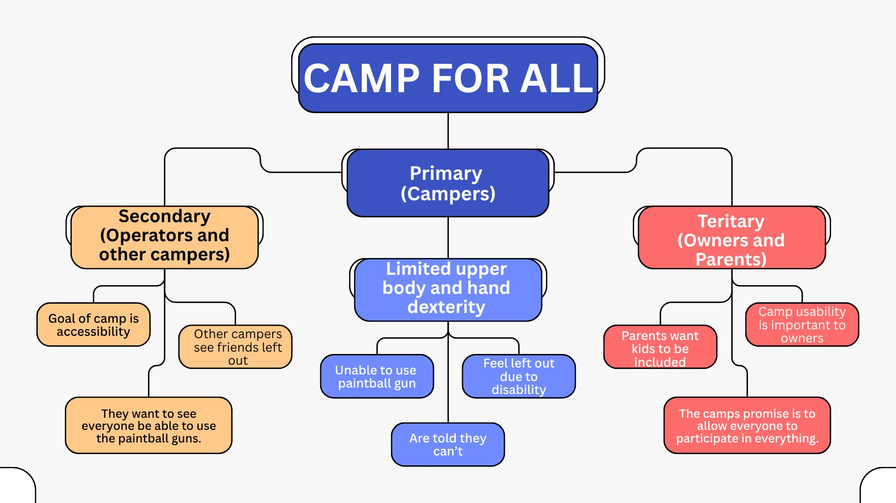
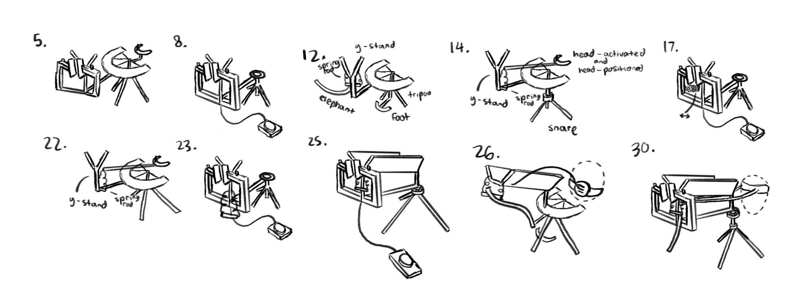
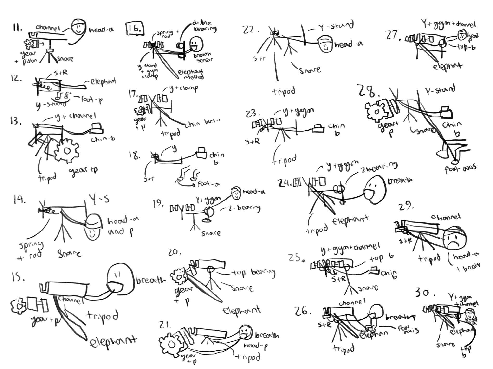

ECE @ Rice ’30 · QuestBridge Scholar
Engineering for everyone.
I'm Lukah, an electrical and computer engineering student focused on photonics, electronics, and nano-devices. I build things that give more people a fair shot.

Now
- Founder & Chairman · UNbound Youth Initiative2025 –
- Founder · Lucid Studio2026 –
- Ambassador · Global Citizens Initiative2025 –
- Researcher · Parity AimFall 2026
Skills
Founder & Chairman · Est. March 2025
Leadership unbound by borders.
A free, student-led fellowship where young leaders across six countries build real community projects.
By the numbers
First fellowship, 2025–26. Speakers include an Oculus VR co-founder and a U.S. Political Advisor to the UN Security Council.
Why I started it
Translating for Operation Smile surgeons in Monterrey convinced me that young people can change the world. UNbound gives them the tools to do it together.
EDES 120/220 · Camp For All
Parity Aim.
An adaptive stand and trigger so campers with limited hand or arm function can play paintball on their own.

Mission
Improve access to paintball for Camp For All campers with limited hand or arm function, so they can play more independently.
Stage 02
Design Analysis
Some campers can aim but can't hold the marker or pull the trigger. Existing adaptive systems cost up to $3,000.


Design criteria
- SafeNXL guidelines
- Stable≥ 100 N
- Sturdy trigger≥ 10 N
- Easy to use · #1 objectiveLevel 4 / 5 independence
- Enduring≥ 10,400 uses
- Economical≤ $40
- Easy to maintain< 20 s to detach
First three are constraints; the rest are ranked objectives.
Stage 03
Design Solution
We went from 74 rough ideas to 2 finalists.
Weighted scores
Top 6 of 10. Weights: ease of use 0.4 · durability 0.3 · cost 0.2 · maintenance 0.1

Stage 04
Prototype Iteration
Build, test against the criteria, rebuild.
- v1 · Lo-fi stand and mountNext
- v2 · Low-force triggerPlanned
- v3 · Integrated prototypePlanned

Stage 05
Communication
Reviews, feedback, and what changed because of it.
Milestones
- Client interviewDone
- Research & criteria reviewDone
- Brainstorm & evaluation reviewDone
- Peer feedback · Week 8Upcoming
- Design reviews & posterUpcoming